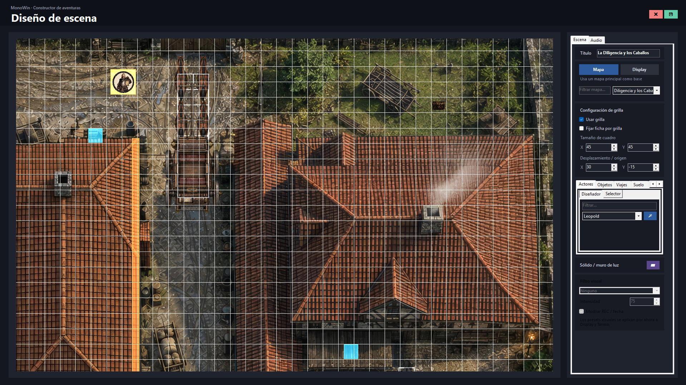
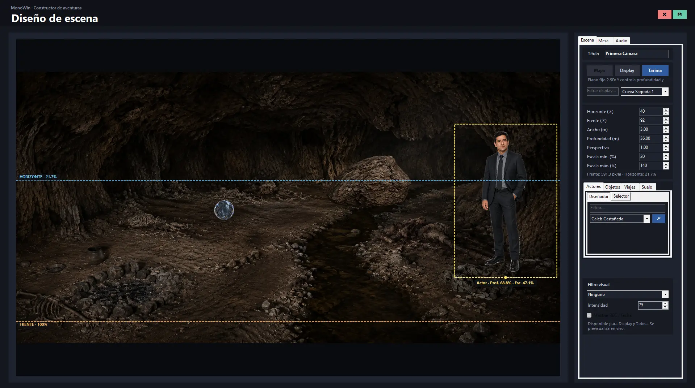
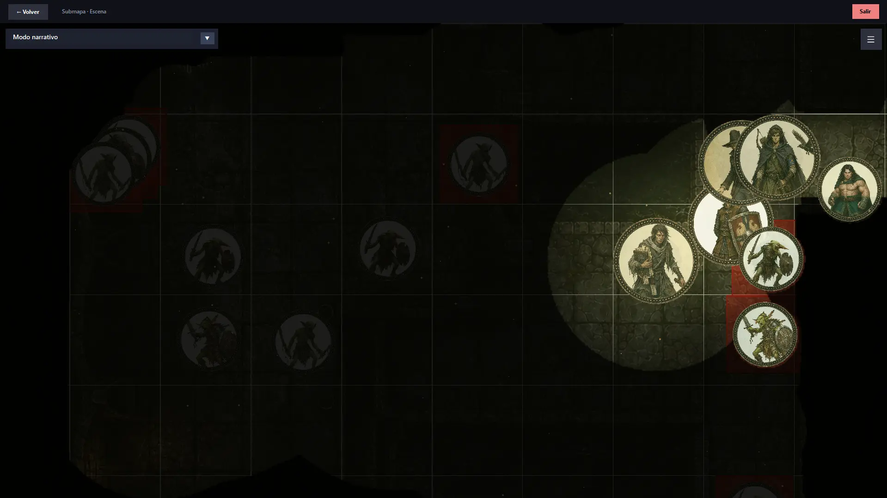
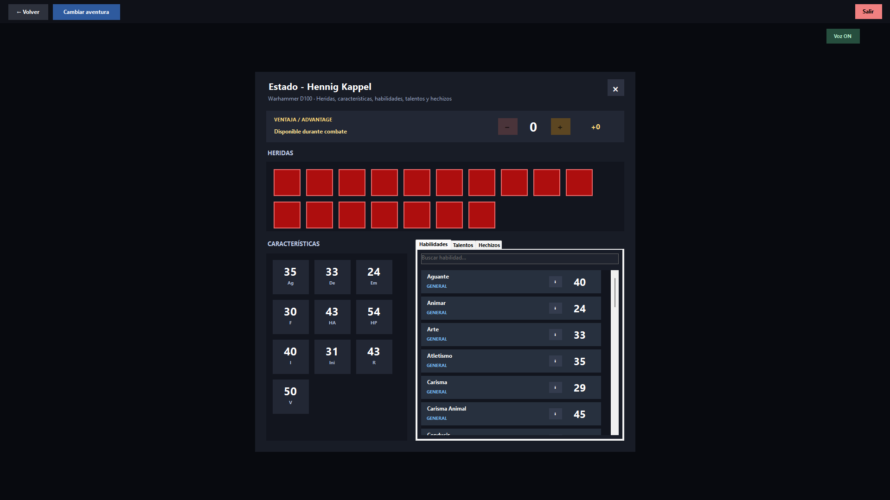
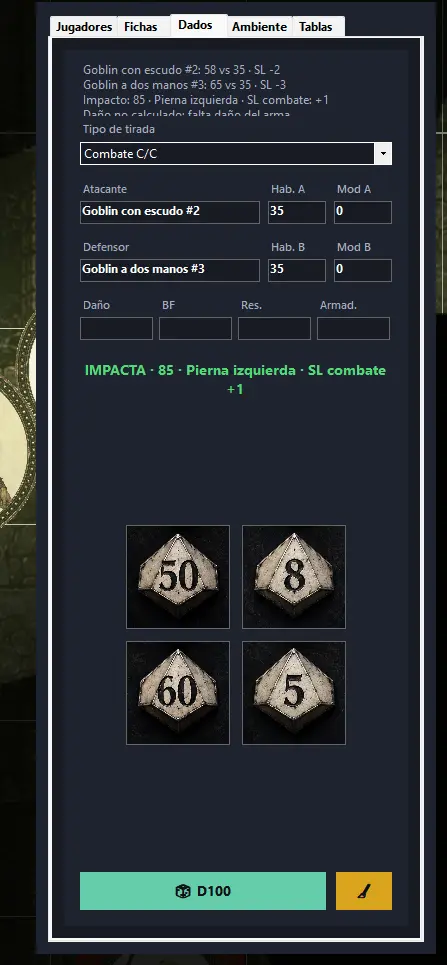

Interactive Tool · Virtual Tabletop
MonoWin
Herramienta personal para preparar y dirigir juegos de rol mediante mapas, fichas, multimedia, efectos visuales y sistemas configurables.
Galería
Distintas partes del sistema
MonoWin reúne herramientas de preparación, representación visual y apoyo mecánico durante la partida. Estas capturas muestran algunas de sus áreas principales.

Construcción de mapas, configuración de grilla y organización de actores, objetos y elementos de la escena.

Configuración de horizonte, profundidad, perspectiva y posicionamiento de elementos para escenas con sensación de profundidad.

Fog of war, iluminación y control visual del tablero durante la sesión.

Gestión de heridas, características, habilidades y hechizos dentro del sistema de juego seleccionado.

Resolución de tiradas y herramientas de apoyo para mecánicas de combate y sistemas basados en dados.
Contexto
De una herramienta WinForms a un VTT más completo
El proyecto nació a partir de herramientas que desarrollé para preparar y ejecutar partidas de Arkham Horror. La primera versión utilizaba exclusivamente WinForms: permitía definir mapas, fichas, zonas ocultas, hojas de personaje y dados, almacenando la configuración en JSON para cargarla después durante la partida.
Conforme aumentó la cantidad de elementos visuales, el enfoque original comenzó a presentar limitaciones de rendimiento. MonoWin surgió como una evolución del concepto, trasladando el renderizado interactivo a MonoGame y ampliando el alcance del sistema.
Características
Qué permite hacer
- Gestión de mapas, escenas y fichas.
- Fog of war e iluminación interactiva.
- Estadísticas y sistemas de juego configurables.
- Dados configurables y flujos de tiradas.
- Integración con Discord mediante un listener independiente.
- Audio ambiental y reproducción de efectos.
- Efectos de partículas para clima.
- Animaciones y efectos visuales para hechizos.
- Herramientas para dirección de partidas y uso en múltiples pantallas.
Problemas técnicos
Aspectos que más me interesó resolver
Uno de los principales retos fue mantener una experiencia visual fluida a medida que aumentaba la complejidad del mapa. El cambio desde un renderizado basado exclusivamente en WinForms hacia MonoGame permitió separar mejor la interfaz tradicional de la capa gráfica interactiva.
El proyecto también ha requerido combinar subsistemas con necesidades distintas: persistencia de datos, renderizado, audio, efectos visuales, reglas de juego, comunicación externa y herramientas de edición.
Rol
Trabajo realizado
Proyecto personal independiente. Diseño de la herramienta, programación, interfaz, sistemas, integración multimedia, pruebas y evolución del producto.
Estado
Proyecto en evolución
MonoWin continúa en desarrollo. Actualmente el objetivo es seguir mejorando el rendimiento, la configuración de sistemas de juego y las herramientas audiovisuales utilizadas durante las sesiones.